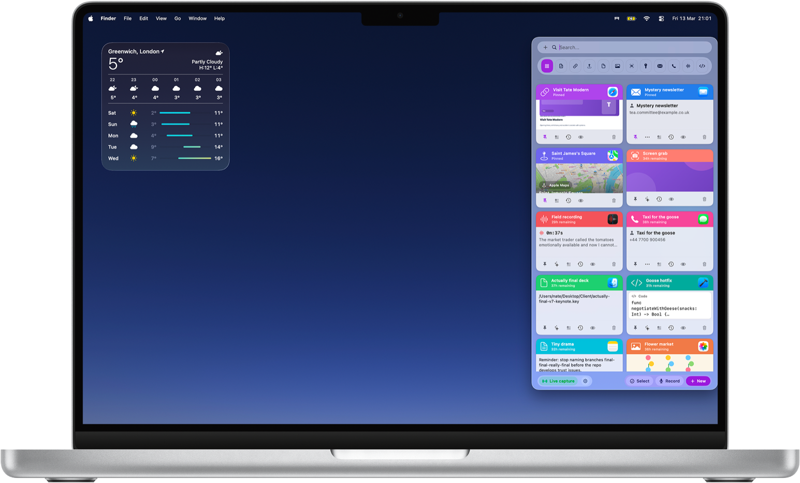
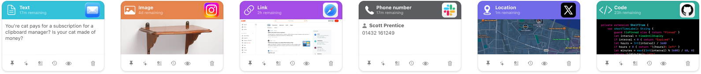
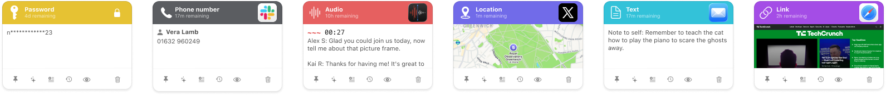
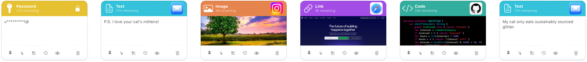

Quick save, clipboard import, previews, and pinning for the thing you needed five seconds ago.
Shelf-ish for macOS, iPhone, and Apple Vision Pro
Capture without breaking stride
Search by what you remember
Cards that match the content
Private by default
Your clipboard, but more shelf-ish.
Save text, links, files, screenshots, code, audio, and more before they vanish into clipboard oblivion. Shelf-ish keeps the useful bits close, lets the rest expire quietly, and makes the whole thing feel a lot less feral.
The App Store link can drop in later. For now the button is simply practising restraint.
Find clips by content, source app, type, tag, or date instead of trying to reconstruct history from vibes.
Text looks like text, code looks like code, and screenshots stop pretending to be generic beige rectangles.
Local-first, no analytics theatre, and expiry rules that keep sensitive clutter from becoming permanent decor.

Why it works
Save it now, sort it later, find it before it becomes folklore.
Shelf-ish is designed for information that matters briefly but still matters. It keeps the flow fast, the shelf legible, and your desktop from quietly becoming a museum of temporary rubbish.
Capture
Clipboard saves, quick capture, and share-sheet handoff make it easy to grab the useful thing while you are still busy being useful.
Organise
Type-aware cards, previews, and pinning keep links, screenshots, code, audio, and little scraps of context from collapsing into one bland pile.
Recall
Search by content, tag, source app, type, or date, then let expiry tidy up the bits you no longer need without making a ceremony of it.
In action
Real cards. Different shapes, different sizes, still easy to scan.
These are the actual Shelf-ish card rows from the product itself, left to be a bit irregular on purpose. The page now gets out of their way and lets the interface do the talking.



Links, screenshots, audio, passwords, phone numbers, maps, and code all have distinct layouts so you can scan instead of squint.
The shelf keeps the useful context attached, whether that is an image, a code block, a transcript snippet, or a location preview.
The cards are varied because real saved things are varied. The job of the product is to make that mess feel readable, not sterile.
Need a hand?
Bug reports, setup questions, and the occasional “why is my clipboard doing that” all have a proper home.
Prefer the plain-English version?
The privacy page explains what Shelf-ish stores, what it does not collect, and where network activity is used only when needed.